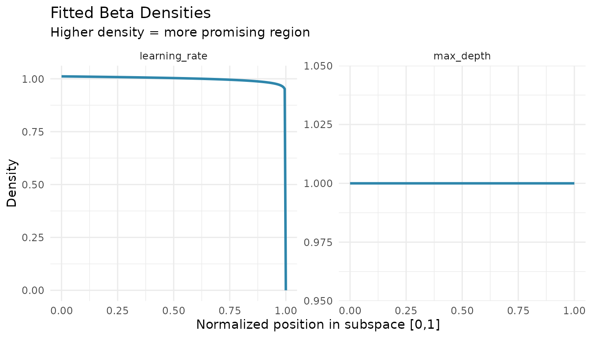

Beta Density Estimation
density-estimation.Rmd
library(spacefinder)
library(data.table)
library(ggplot2)
library(generics)
data("benchmark_data", package = "spacefinder")Introduction
After fitting a subspace, you can add probabilistic density
information using augment(). This fits Beta distributions
to each hyperparameter dimension, allowing you to:
- Sample new configurations weighted toward better regions
- Estimate probability densities within the subspace
- Understand which parts are most promising
Note: augment() is only available for
Box and Polygon learners, not
Ellipsoid.
Basic Usage
# Train a box learner
task <- TaskSubspace$new(
data = benchmark_data,
target_measure = "auc",
hps = c("learning_rate", "max_depth")
)
learner <- LearnerSubspaceBox$new(task)
learner$train(q_val = 0.9)
# Fit beta densities
densities <- augment(learner)
print(densities)
#> parameter alpha beta converged iterations
#> <char> <num> <num> <lgcl> <int>
#> 1: learning_rate 1 1.011413 TRUE 4
#> 2: max_depth 1 1.000000 TRUE 7The augment() function returns fitted Beta distribution
parameters (α, β) for each hyperparameter.
Understanding Beta Parameters
# Extract parameters for learning_rate
lr_params <- densities[parameter == "learning_rate"]
alpha <- lr_params$alpha
beta <- lr_params$beta
cat("Learning rate Beta(", alpha, ", ", beta, ")\n", sep = "")
#> Learning rate Beta(1, 1.011413)
cat("Mode at:", (alpha - 1) / (alpha + beta - 2), "\n")
#> Mode at: 0- α = β = 1: Uniform distribution (all values equally likely)
- α > 1, β > 1: Peak in the interior (preferred region)
- α > β: Peak toward 1 (prefers higher values in [0,1])
- α < β: Peak toward 0 (prefers lower values in [0,1])
Visualizing Densities
# Plot beta densities
x <- seq(0, 1, length.out = 200)
plot_data <- rbindlist(lapply(densities$parameter, function(hp) {
params <- densities[parameter == hp]
data.table(
parameter = hp,
x = x,
density = dbeta(x, params$alpha, params$beta)
)
}))
ggplot(plot_data, aes(x = x, y = density)) +
geom_line(color = "#2E86AB", linewidth = 1) +
facet_wrap(~parameter, scales = "free_y") +
theme_minimal() +
labs(title = "Fitted Beta Densities",
subtitle = "Higher density = more promising region",
x = "Normalized position in subspace [0,1]",
y = "Density")
Higher density indicates regions where good configurations are more concentrated.
Sampling New Configurations
You can sample from the fitted distributions to generate new hyperparameter configurations:
set.seed(123)
n_samples <- 5
# Get bounds
bounds <- coef(learner)
lr_bounds <- bounds[hyperparameter == "learning_rate"]
depth_bounds <- bounds[hyperparameter == "max_depth"]
# Sample from beta distributions (in [0,1])
lr_params <- densities[parameter == "learning_rate"]
depth_params <- densities[parameter == "max_depth"]
samples_unit <- data.table(
learning_rate_unit = rbeta(n_samples, lr_params$alpha, lr_params$beta),
max_depth_unit = rbeta(n_samples, depth_params$alpha, depth_params$beta)
)
# Transform to original scale
samples <- data.table(
learning_rate = samples_unit$learning_rate_unit *
(lr_bounds$max - lr_bounds$min) + lr_bounds$min,
max_depth = samples_unit$max_depth_unit *
(depth_bounds$max - depth_bounds$min) + depth_bounds$min
)
print(samples)
#> learning_rate max_depth
#> <num> <num>
#> 1: 0.004441567 3.518000
#> 2: 0.003979221 6.869152
#> 3: 0.001969978 13.764904
#> 4: 0.003526761 12.046947
#> 5: 0.003438297 11.064951These sampled configurations are weighted toward the most promising regions.
Regularization
By default, augment() uses
regularize = TRUE to avoid U-shaped densities:
# With regularization (default)
densities_reg <- augment(learner, regularize = TRUE)
# Without regularization
densities_unreg <- augment(learner, regularize = FALSE)
cat("With regularization:\n")
#> With regularization:
print(densities_reg[, .(parameter, alpha, beta)])
#> parameter alpha beta
#> <char> <num> <num>
#> 1: learning_rate 1 1.011413
#> 2: max_depth 1 1.000000
cat("\nWithout regularization:\n")
#>
#> Without regularization:
print(densities_unreg[, .(parameter, alpha, beta)])
#> parameter alpha beta
#> <char> <num> <num>
#> 1: learning_rate 0.7372656 1.0114126
#> 2: max_depth 0.3180896 0.2720397Regularization enforces α ≥ 1 and β ≥ 1, ensuring the mode exists in the interior of [0,1].
Categorical Hyperparameters
When using categorical hyperparameters, separate densities are fitted per level:
task_cat <- TaskSubspace$new(
data = benchmark_data,
target_measure = "auc",
hps = c("learning_rate", "max_depth"),
cat_hps = "optimizer"
)
learner_cat <- LearnerSubspaceBox$new(task_cat)
learner_cat$train(q_val = 0.9)
densities_cat <- augment(learner_cat)
print(densities_cat)
#> parameter alpha beta converged iterations optimizer
#> <char> <num> <num> <lgcl> <int> <char>
#> 1: learning_rate 1 1 TRUE 6 RMSprop
#> 2: max_depth 1 1 TRUE 9 RMSprop
#> 3: learning_rate 1 1 TRUE 5 Adam
#> 4: max_depth 1 1 TRUE 8 Adam
#> 5: learning_rate 1 1 TRUE 6 SGD
#> 6: max_depth 1 1 TRUE 7 SGDEach optimizer gets its own Beta distribution parameters for each hyperparameter.
Polygon Learner
augment() also works with Polygon learners:
learner_polygon <- LearnerSubspacePolygon$new(task)
learner_polygon$train(q_val = 0.9, lambda = 0.1)
densities_polygon <- augment(learner_polygon)
print(densities_polygon)
#> parameter alpha beta converged iterations
#> <char> <num> <num> <lgcl> <int>
#> 1: learning_rate 1 1.39525 TRUE 4
#> 2: max_depth 1 1.00000 TRUE 5The process is the same: data is transformed to the unit cube, then Beta distributions are fitted.
Summary
-
augment()adds Beta density parameters to Box and Polygon learners - Higher density indicates more promising regions
- Use fitted densities to sample new configurations
- Regularization (default) prevents U-shaped densities
- Works with categorical hyperparameters
Next Steps
-
vignette("learner-comparison"): Compare Box, Polygon, and Ellipsoid learners -
vignette("categorical-hyperparameters"): Handle categorical variables
sessionInfo()
#> R version 4.5.2 (2025-10-31)
#> Platform: x86_64-pc-linux-gnu
#> Running under: Ubuntu 24.04.3 LTS
#>
#> Matrix products: default
#> BLAS: /usr/lib/x86_64-linux-gnu/openblas-pthread/libblas.so.3
#> LAPACK: /usr/lib/x86_64-linux-gnu/openblas-pthread/libopenblasp-r0.3.26.so; LAPACK version 3.12.0
#>
#> locale:
#> [1] LC_CTYPE=C.UTF-8 LC_NUMERIC=C LC_TIME=C.UTF-8
#> [4] LC_COLLATE=C.UTF-8 LC_MONETARY=C.UTF-8 LC_MESSAGES=C.UTF-8
#> [7] LC_PAPER=C.UTF-8 LC_NAME=C LC_ADDRESS=C
#> [10] LC_TELEPHONE=C LC_MEASUREMENT=C.UTF-8 LC_IDENTIFICATION=C
#>
#> time zone: UTC
#> tzcode source: system (glibc)
#>
#> attached base packages:
#> [1] stats graphics grDevices utils datasets methods base
#>
#> other attached packages:
#> [1] generics_0.1.4 ggplot2_4.0.1 data.table_1.17.8
#> [4] spacefinder_0.2.1.9001
#>
#> loaded via a namespace (and not attached):
#> [1] Matrix_1.7-4 bit_4.6.0 gtable_0.3.6 jsonlite_2.0.0
#> [5] Rmpfr_1.1-2 compiler_4.5.2 Rcpp_1.1.0 jquerylib_0.1.4
#> [9] systemfonts_1.3.1 scales_1.4.0 textshaping_1.0.4 yaml_2.3.12
#> [13] fastmap_1.2.0 lattice_0.22-7 R6_2.6.1 labeling_0.4.3
#> [17] knitr_1.50 backports_1.5.0 checkmate_2.3.3 desc_1.4.3
#> [21] bslib_0.9.0 RColorBrewer_1.1-3 rlang_1.1.6 cachem_1.1.0
#> [25] CVXR_1.0-15 xfun_0.54 S7_0.2.1 fs_1.6.6
#> [29] sass_0.4.10 bit64_4.6.0-1 cli_3.6.5 withr_3.0.2
#> [33] pkgdown_2.2.0 digest_0.6.39 grid_4.5.2 gmp_0.7-5
#> [37] lifecycle_1.0.4 scs_3.2.7 vctrs_0.6.5 evaluate_1.0.5
#> [41] glue_1.8.0 farver_2.1.2 ragg_1.5.0 rmarkdown_2.30
#> [45] tools_4.5.2 htmltools_0.5.9